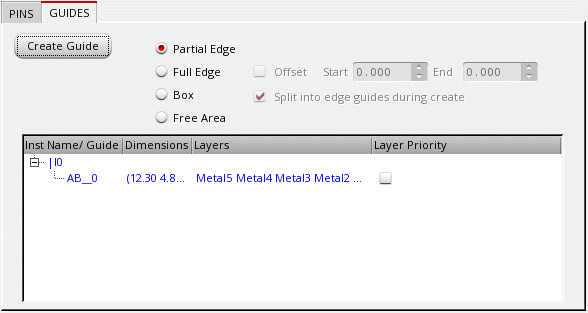

Creating a Partial Edge Pin Group Guide
To create a pin group guide that cover a partial edge:
-
Choose Floorplan – Pin Group Guides – Create.
In Layout EXL and higher tiers, choose Plan – Pin Planning – Create/Edit Pin Group Guide.
The Pin Group Guide form appears. -
Specify the name of the new pin group guide in Group Name field or click New to generate a unique group name.
You can edit the automatically-generated group name. -
Draw the pin group guide on the layout canvas using the options on the GUIDES tab.
 - Choose Partial Edge.
- Click Create Guide.
- Click the required edge to indicate the first point of the pin group guide in the layout design.
-
Click to indicate the last point of the pin group guide. If you are creating multiple pin group guides, continue to click the edges to create the additional pin group guides.
-
Press
Escwhen you are done.

- Choose one of the options Constraints Only, Preview, or Optimize (default).
- Choose a Mode.
- Click Apply to submit the updates you made and view the pin group guide in the layout design.
Area boundaries are created and the specified pins are placed within the pin group guide that you created.
If you enter a top-level or soft block corner as the first point of a pin group guide, then, by default, you are prompted to create a vertical guide (along the y-axis).
Creating a Horizontal Guide
-
Press
F3to display the Create Guide popup box. - Choose Horizontal from the Snap Mode drop-down list.
- Click Hide to close the Create Guide popup window.
- Proceed to create a horizontal pin group guide.
You can use this method to create orthogonal pin group guides.
Related Topics
Creating a Full Edge Pin Group Guide
Creating a Box Pin Group Guide
Creating a Free Area Pin Group Guide
Return to top